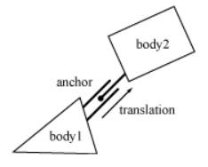

Restricts relative motion between Bodies to one shared axis.

Constructors
| love.physics.newPrismaticJoint | Creates a PrismaticJoint between two bodies. |
Functions
| Joint:destroy | Explicitly destroys the Joint. | ||
| Joint:getAnchors | Get the anchor points of the joint. | ||
| Joint:getBodies | Gets the bodies that the Joint is attached to. | ||
| Joint:getCollideConnected | Gets whether the connected Bodies collide. | ||
| Joint:getReactionForce | Returns the reaction force on the second body. | ||
| Joint:getReactionTorque | Returns the reaction torque on the second body. | ||
| Joint:getType | Gets a string representing the type. | ||
| Joint:getUserData | Returns the Lua value associated with this Joint. | ||
| Joint:isDestroyed | Gets whether the Joint is destroyed. | ||
| Joint:setCollideConnected | Sets whether the connected Bodies should collide with each other. | ||
| Joint:setUserData | Associates a Lua value with the Joint. | ||
| PrismaticJoint:areLimitsEnabled | Checks whether the limits are enabled. | ||
| PrismaticJoint:enableLimit | Enables or disables the limits of the joint. | ||
| PrismaticJoint:enableMotor | Starts or stops the joint motor. | ||
| PrismaticJoint:getAxis | Gets the world-space axis vector of the Prismatic Joint. | ||
| PrismaticJoint:getJointSpeed | Get the current joint angle speed. | ||
| PrismaticJoint:getJointTranslation | Get the current joint translation. | ||
| PrismaticJoint:getLimits | Gets the joint limits. | ||
| PrismaticJoint:getLowerLimit | Gets the lower limit. | ||
| PrismaticJoint:getMaxMotorForce | Gets the maximum motor force. | ||
| PrismaticJoint:getMotorForce | Returns the current motor force. | ||
| PrismaticJoint:getMotorSpeed | Gets the motor speed. | ||
| PrismaticJoint:getUpperLimit | Gets the upper limit. | ||
| PrismaticJoint:hasLimitsEnabled | Checks whether the limits are enabled. | ||
| PrismaticJoint:isLimitEnabled | Checks whether the limits are enabled. | ||
| PrismaticJoint:isLimitsEnabled | Checks whether limits are enabled. | ||
| PrismaticJoint:isMotorEnabled | Checks whether the motor is enabled. | ||
| PrismaticJoint:setLimits | Sets the limits. | ||
| PrismaticJoint:setLimitsEnabled | Enables/disables the joint limit. | ||
| PrismaticJoint:setLowerLimit | Sets the lower limit. | ||
| PrismaticJoint:setMaxMotorForce | Set the maximum motor force. | ||
| PrismaticJoint:setMotorEnabled | Enables/disables the joint motor. | ||
| PrismaticJoint:setMotorSpeed | Sets the motor speed. | ||
| PrismaticJoint:setUpperLimit | Sets the upper limit. |
Supertypes
See Also